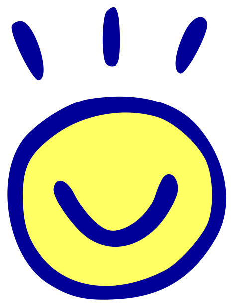

sike pona
next →
sike pona
next →

nasin kamalipu ni li open lon mun nanpa wan pi sike nanpa 2023.
jan Tene en kala pona Tonyu li lawa e lipu ni.
sina jan pi toki pona la o kama a!
o pana e wile Pull Request tawa ilo Github.
o ante e jan.json, o pana e ni:
{ "name": "<nimi sina>", "url": "<linja pi lipu sina>" }
sina ken ala kepeken ilo Github la sina ken kama lon nasin ante.
o toki tawa jan Tene lon @denesszanto kepeken ilo Siko. anu o toki tawa kala pona Tonyu lon bucketfishy@gmail.com. o toki e nimi sina, e linja pi lipu sina.
sina lon sike la o pana e lipu lili tawa lipu sina. o pana e toki wan ni:
o ante e NIMI_SINA tawa nimi pi pana sina.
<div id="sike-pona" style="width: 100%; height: 3rem;">
<link rel="stylesheet" href="https://sike.pona.la/embed.css"/>
<span id="left">
<a href="https://sike.pona.la/jan/NIMI_SINA/prev.html" id="prev">← prev</a>
</span>
<span id="mid"><a href="https://sike.pona.la">
<img class="tokipona" src="https://sike.pona.la/assets/tokipona.svg"></img>
sike pona
<img class="tokipona" src="https://sike.pona.la/assets/tokipona.svg"></img>
</a></span>
<span id="right">
<a href="https://sike.pona.la/jan/NIMI_SINA/next.html" id="next">next →</a>
</span>
</div>lukin la, ona li sama ni:
<div style="position:relative; width:88px;">
<img src="https://sike.pona.la/assets/sike-pona.gif" style="width:100%; height:auto; image-rendering:pixelated; display:block;" alt="sike pona">
<a href="https://sike.pona.la/jan/NIMI_SINA/prev.html"
style="position:absolute; left:9%; top:19%; width:23%; height:65%;"></a>
<a href="https://sike.pona.la/"
style="position:absolute; left:39%; top:19%; width:24%; height:65%;"></a>
<a href="https://sike.pona.la/jan/NIMI_SINA/next.html"
style="position:absolute; left:69%; top:19%; width:23%; height:65%;"></a>
</div>lukin la, ona li sama ni:
<div style="position:relative; width:88px;">
<img src="https://sike.pona.la/assets/sike-pona2.gif" style="width:100%; height:auto; image-rendering:pixelated; display:block;" alt="sike pona">
<a href="https://sike.pona.la/jan/NIMI_SINA/prev.html"
style="position:absolute; left:9%; top:19%; width:23%; height:65%;"></a>
<a href="https://sike.pona.la/"
style="position:absolute; left:39%; top:19%; width:24%; height:65%;"></a>
<a href="https://sike.pona.la/jan/NIMI_SINA/next.html"
style="position:absolute; left:69%; top:19%; width:23%; height:65%;"></a>
</div>lukin la, ona li sama ni:
<style>
.bg {
display:flex;
align-items:center;
justify-content:center;
width:100%;
padding:0.5em;
box-sizing:border-box;
position:relative;
background:url('sike-pona-carpet.png') repeat;
}
.bg::before {
content:"";
position:absolute;
top:0;
left:0;
right:0;
bottom:0;
background:url('sike-pona-carpet.png') repeat;
filter:blur(3px);
}
.bg > * {
position:relative;
}
</style>
<div class="bg">
<a href="https://sike.pona.la/jan/NIMI_SINA/prev.html">
<img src="https://sike.pona.la/assets/sike-pona-arrow.png">
</a>
<a href="https://sike.pona.la/">
<img src="https://sike.pona.la/assets/sike-pona-text.png">
</a>
<a href="https://sike.pona.la/jan/NIMI_SINA/next.html">
<img src="https://sike.pona.la/assets/sike-pona-arrow.png">
</a>
</div>lukin la, ona li sama ni:

sina wile ala kepeken lipu lili la sina ken kepeken linja:
linja tawa kama: https://sike.pona.la/jan/NIMI_SINA/next.html
linja tawa pini: https://sike.pona.la/jan/NIMI_SINA/prev.html
linja tawa lipu ni: https://sike.pona.la/
o pona!
o pilin ike ala! o toki tawa mi, anu jan ante lon sike ni.